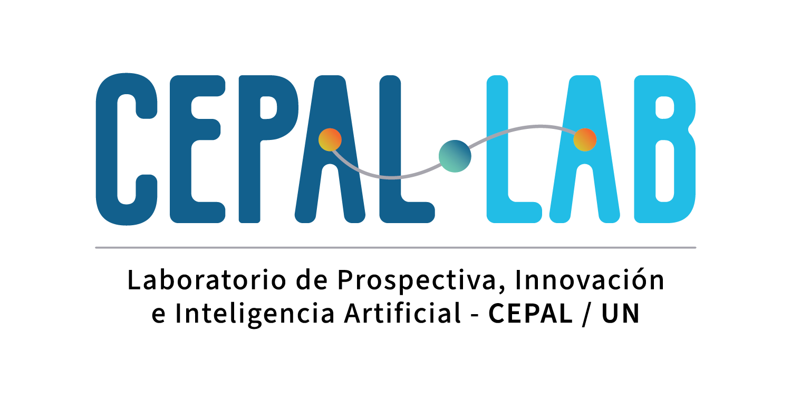

BORRADOR DE REVISIÓN
Análisis de la producción de la CEPAL sobre cambio climático (2015-2026)
Nota de revisión
Este trabajo fue realizado por Alejandro Bustamante, del CEPAL Lab, para el Instituto Latinoamericano y del Caribe de Planificación Económica y Social (ILPES) y la Unidad de Cambio Climático de la CEPAL. El flujo de trabajo combinó la identificación de publicaciones climáticas en el Repositorio Digital de la CEPAL, su preselección, la destilación y el enriquecimiento de contenidos y la construcción de una síntesis analítica asistida por distintos modelos de inteligencia artificial. El diseño del flujo, la evaluación de los modelos y la revisión de los resultados en cada subproceso estuvieron a cargo de personas. Este documento es un borrador preliminar para revisión interna y puede contener errores; no se recomienda su difusión.